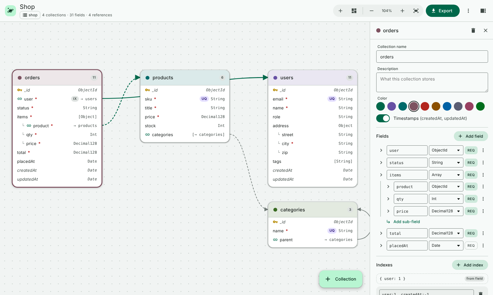
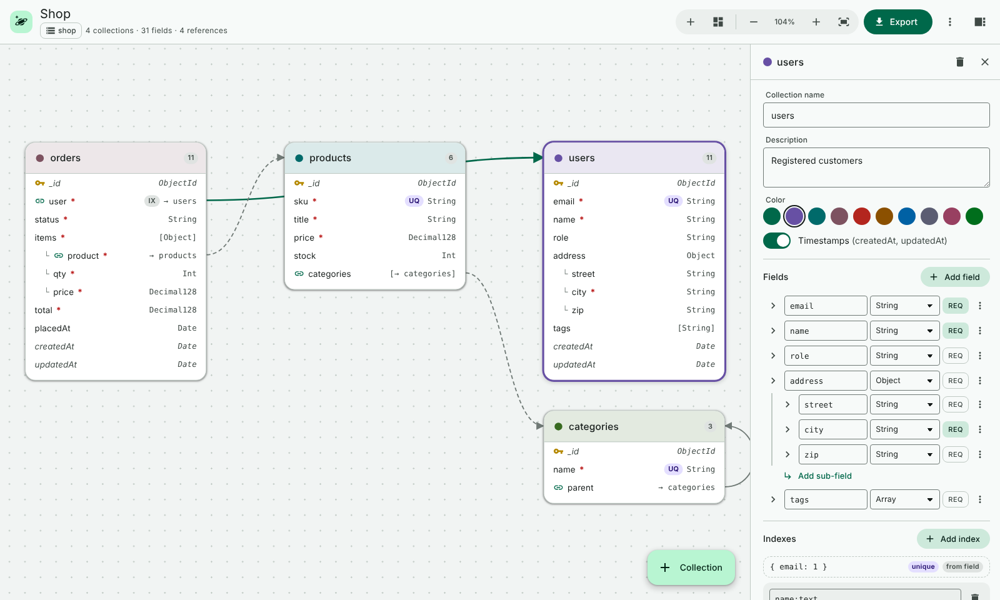
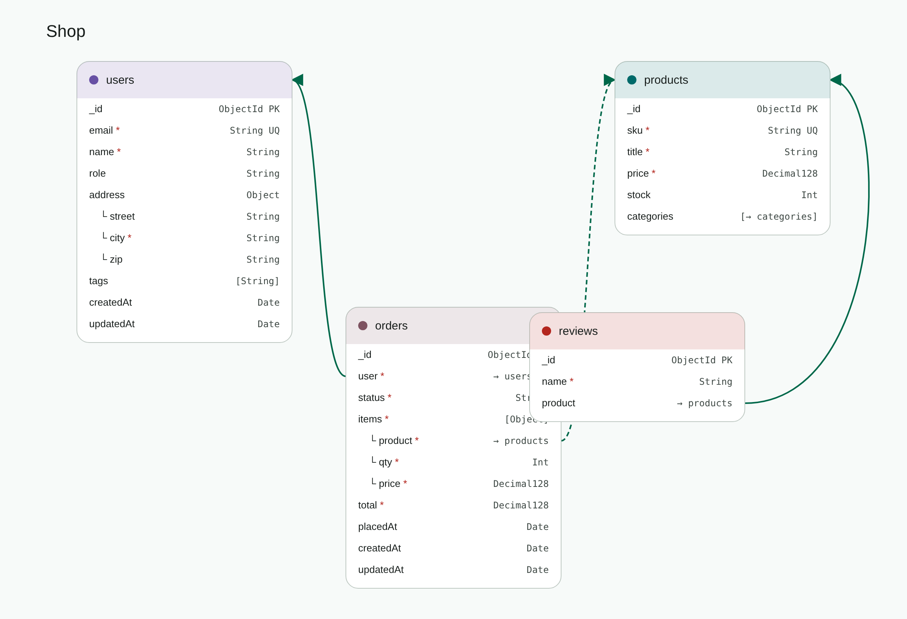

Kosmora
Contents
- Introduction
- Installing Kosmora
- Quick start
- The schema designer
- Exporting a schema
- Using your exports
- Settings
- Troubleshooting
- License and support
User guide
Everything you need to design MongoDB schemas and export them with Kosmora, explained step by step.
1Introduction
Kosmora is an extension for Visual Studio Code that lets you draw your MongoDB data model on a canvas and export it as JSON Schema, MongoDB validators, Mongoose, TypeScript, Prisma, Pydantic, Markdown, Mermaid, DBML, SVG or PNG.
Words used in this guide
| Term | Meaning |
|---|---|
| Schema design | A .kosmora.json file that describes your collections and fields. |
| Collection | A group of documents in MongoDB, like a table in SQL. |
| Field | A named value inside a document, such as email or price. |
| Reference | A field that stores the _id of a document in another collection. |
| Command Palette | The VS Code command box. Open it with Ctrl+Shift+P (Cmd+Shift+P on macOS). |
2Installing Kosmora
You need Visual Studio Code 1.85 or newer on Windows, macOS or Linux.
From the Marketplace
- Open VS Code and click the Extensions icon in the activity bar, or press Ctrl+Shift+X.
- Search for Kosmora.
- Click Install on "Kosmora: MongoDB Schema Designer" by sanket-manohar.
From a VSIX file (offline install)
- Download
kosmora-1.0.0.vsixfrom the GitHub releases page. - In VS Code, open the Extensions view, click the ⋯ menu at its top and choose Install from VSIX….
- Pick the downloaded file. Kosmora is ready when the planet icon appears in the activity bar.
You can also install from a terminal:
code --install-extension kosmora-1.0.0.vsix3Quick start
Kosmora includes an interactive walkthrough with screenshots. It opens on VS Code's Welcome page after you install, and you can reopen it at any time with Kosmora: Get Started with Kosmora from the Command Palette or the ⋯ menu of the Kosmora sidebar.
This five-minute tour creates a design and exports it.
- Open a folder in VS Code (File → Open Folder…).
- Open the Command Palette and run Kosmora: New Sample Schema (Shop). A ready-made shop design opens in the designer.
- Click a collection card, such as users. The panel on the right shows its fields. Change a field name or type and watch the card update.
- Click Export in the top bar and choose a format, for example Mongoose models. The generated code opens in a new editor.
- Click the planet icon in the activity bar. The Schema Designs view lists every design in your workspace.

4The schema designer
Creating and opening designs
- Run Kosmora: New Schema Design to start an empty design, or Kosmora: New Sample Schema (Shop) to start from an example.
- Any file whose name ends in
.kosmora.jsonopens in the designer automatically. The Schema Designs view in the Kosmora sidebar lists them all; click one to open it. - To see the raw JSON, choose Open as JSON from the More actions menu (⋮). To switch back, run Kosmora: Open in Schema Designer.
- Designs save like any file with Ctrl+S, and undo and redo work as usual.
The screen at a glance
| Area | What it does |
|---|---|
| Top bar | Design name, database name and counts; add collection, auto-arrange, zoom, fit, Export, the More actions menu and the inspector toggle. |
| Canvas | Your collections as cards. Arrows show references; dashed arrows mean one-to-many (an array of references). |
| Inspector | The right-hand panel. It shows schema details when nothing is selected, or the selected collection's settings, fields and indexes. |
Collections
- Click the + Collection button, press A, or double-click an empty part of the canvas.
- Type a name in Collection name. Add a Description if you like; it appears in docs and generated code.
- Pick a Color to group related collections.
- Turn on Timestamps to add
createdAtandupdatedAtautomatically. - Drag a card by its header to move it. Press L to auto-arrange everything.
Fields
- Select a collection and click Add field.
- Type the field name and choose its type.
- Click REQ to make the field required.
- Click the arrow (Show details) for more options: Unique, Indexed, Default, Description, Minimum/Maximum, Min length/Max length, Pattern (regex) and Allowed values.
- Use the ⋮ menu on a field to move it up or down, duplicate it or delete it.
_id is added automatically as an ObjectId, so you don't need to create it.
| Type | Use it for |
|---|---|
| String | Text |
| Number, Int, Long, Double, Decimal128 | Numbers. Use Decimal128 for money. |
| Boolean | true or false |
| Date | Dates and times |
| ObjectId | IDs, and references to other collections |
| UUID, Binary | UUIDs and binary data |
| Object | An embedded sub-document. Use Add sub-field to fill it. |
| Array | A list. Choose what it holds in Array of. |
| Mixed | Any value |
References between collections
- Add a field with type ObjectId, for example
userinorders. - Open its details and choose the target in References collection, for example
users. - An arrow appears between the cards. For one-to-many, make the field an Array of ObjectId with a reference; the arrow is dashed.

Indexes
Marking a field Unique or Indexed creates a single-field index. For compound, text or TTL indexes, click Add index in the inspector, list the fields and choose the options.
Problems
Kosmora checks your design as you work. Duplicate names, invalid field names and references to collections that don't exist show a warning icon on the card and a count at the bottom left of the canvas. Click the count to see the list, and click a problem to select its collection.
Keyboard shortcuts
| Key | Action |
|---|---|
| A | Add a collection |
| L | Auto-arrange |
| F | Fit everything on screen |
| + / - | Zoom in or out (or Ctrl + scroll) |
| Del | Delete the selected collection |
| Esc | Clear the selection |
5Exporting a schema
Click Export in the designer and choose a format. Or use the Command Palette:
- Kosmora: Export Schema… saves one format to a file.
- Kosmora: Export Schema in All Formats… saves every format into a folder you choose.
- Kosmora: Preview Schema Export… opens the result in an unsaved editor so you can look before saving.
| Format | What you get |
|---|---|
| JSON Schema | Draft 2020-12 definitions, one per collection. |
| MongoDB validators | A mongosh script that creates each collection with a $jsonSchema validator, plus its indexes. |
| Mongoose models | Schemas with refs, validation and indexes, as CommonJS or ES modules. |
| TypeScript interfaces | Typed documents using the mongodb package's types. |
| Prisma schema | The MongoDB provider, with composite types and relations. |
| Pydantic models | Python Pydantic v2 models. |
| Markdown docs | Field tables, indexes and a Mermaid diagram. |
| Mermaid | An erDiagram you can paste into GitHub or docs. |
| DBML | For dbdiagram.io and similar tools. |
| SVG and PNG | Images of your diagram, in light or dark. |

6Using your exports
Kosmora never connects to a database. It only writes the files you export, and you decide where to use them.
- Application code. Copy the Mongoose models, TypeScript interfaces, Prisma schema or Pydantic models into your project and adjust them as needed.
- Documentation. Commit the Markdown, Mermaid, DBML or image exports next to your code, or paste them into a wiki.
- MongoDB validators. The exported
.mongodb.jsfile is a mongosh script that creates each collection with its validator and indexes. Read it first, then run it yourself on a test database:
mongosh "<your connection string>" shop.mongodb.js7Settings
Open File → Preferences → Settings and search for Kosmora.
| Setting | Default | What it does |
|---|---|---|
kosmora.theme | auto | Color scheme: auto (follow VS Code), light or dark. |
kosmora.export.outputFolder | (empty) | Export folder, relative to the design file. |
kosmora.export.mongooseModuleSystem | commonjs | CommonJS or ES module output for Mongoose. |
kosmora.export.imageTheme | light | Theme of exported SVG and PNG diagrams. |
8Troubleshooting
The designer opens as plain text
The file name must end in .kosmora.json. Right-click the file and choose Open With… → Kosmora Schema Designer, or run Kosmora: Open in Schema Designer.
I can't find my exported files
Kosmora asks where to save every export. The save dialog starts in the folder of the design file, or in the folder set in kosmora.export.outputFolder.
The diagram image is too dark or too light
Change kosmora.export.imageTheme to light or dark and export again.
9License and support
Kosmora is proprietary software. © 2026 Sanket Santosh Vidya Manohar. All rights reserved.
- You may download Kosmora for free from the official Marketplace listing or GitHub releases, and use it for personal, educational and commercial work. Everything you create with it is yours.
- Your data: Kosmora never connects to a database. You are responsible for how you use the code and scripts it generates, and for your backups. Kosmora is provided "as is", and its owner accepts no liability for data loss, corruption, downtime or other damage from using it or its output.
- You may not republish, redistribute, modify, update, sell or reverse engineer Kosmora, or use its name or logo for another product, without written permission.
Read the full terms in LICENSE.md.
For help, bug reports and feature ideas, open an issue at github.com/sanket-manohar/kosmora/issues.
Trademarks and independence
Kosmora is a separate, independently developed tool. It is not affiliated with, sponsored by, endorsed by or connected to MongoDB, Inc., Microsoft Corporation or any other company whose products it designs for or exports to.
MongoDB, MongoDB Atlas and MongoDB Compass are trademarks of MongoDB, Inc. Visual Studio Code is a trademark of Microsoft Corporation. Mongoose, Prisma, Pydantic, TypeScript, Mermaid, DBML and all other names in this guide belong to their respective owners. They are mentioned only to describe what Kosmora designs for or exports to. Kosmora does not include, sell or connect to any of those products; you obtain and use them separately under their own terms.